[AR] Lots of dashboard updates
Issue number 827
karaschechtman opened this issue on September 14, 2020 at 10:39 am
Labels Data quality
State or US: AR
Describe the problem AR updated its dashboard with new sources, we need to change our capture and patch our handling on 9/13 (and 9/12 for hospitalizations)
Negative Tests (PCR) and Negative (People or Cases) - PCR negatives from dashboard, no backfill because incomplete timeseries, but start using the numbers, patch yesterday and write a public note Total Tests (PCR) - PCR negatives + PCR positives from dashboard, no backfill because incomplete time-series, but start using the numbers, patch yesterday and write a public note Positive Tests (PCR) - leave the same (empty); the PCR number is cases Positive, Confirmed Cases, Probable Cases - start getting them from the dashboard and patch yesterday Antigens - submit outreach about the gap between their dashboard and the PDF, keep collecting yesterday’s Deaths for Deaths (confirmed and probable) - we will patch yesterday’s and start using the breakdown Cur hospitalizations - patch 9/12 from page graphic, add warning note Cur vent - patch 9/12 from page graphic, add warning note Cur ICU - keep as using dash Recovered - patch 9/12 and 9/13 from page graphic, add warning note
Data sources 9/13 tests 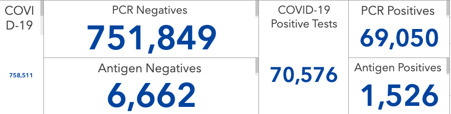 9/13 deaths 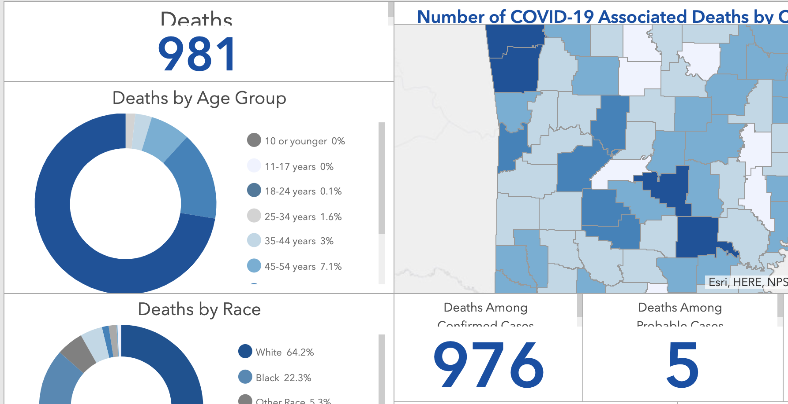
9/12 deaths 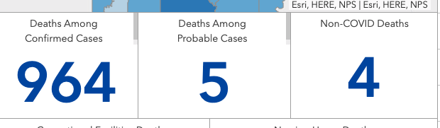 SEptember 13 hosp graphics https://covidtracking.com/screenshots/AR/AR-20200913-180445.png September 12 Hosps graphics https://covidtracking.com/screenshots/AR/AR-20200912-180422.png September 12 cases https://covidtracking.com/screenshots/AR/AR-secondary-20200913-180451.png
{kind=link}
{kind=link}
{kind=link}
Comments
Patches from 9/13 of cases and tests Before 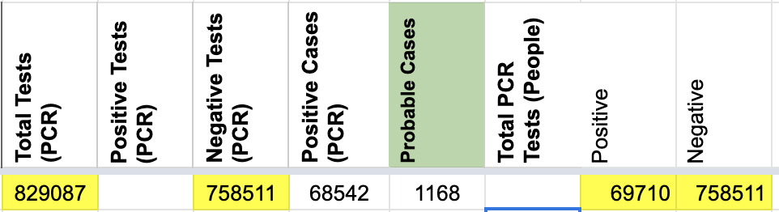 After 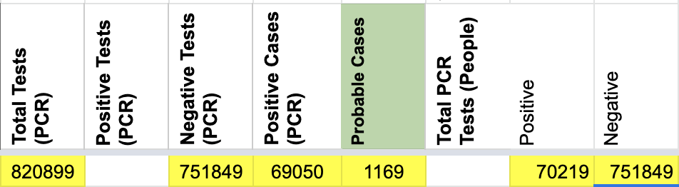
Hospitalizations changes
Before 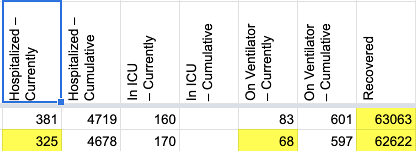
After 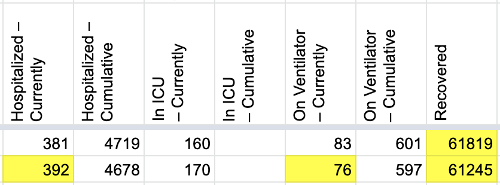
Deaths changes Before 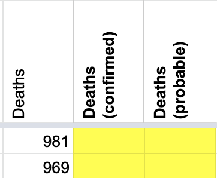 After 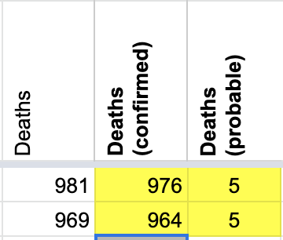
Source note changes to Worksheet2 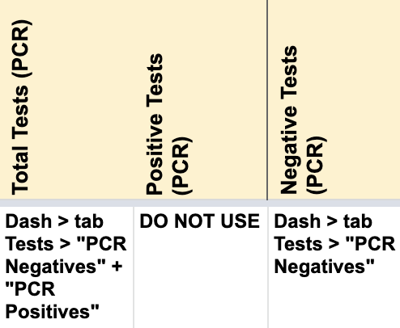 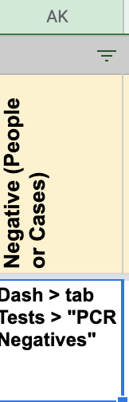 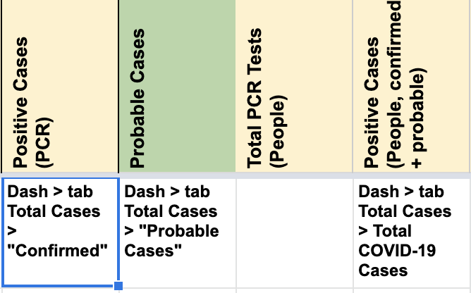 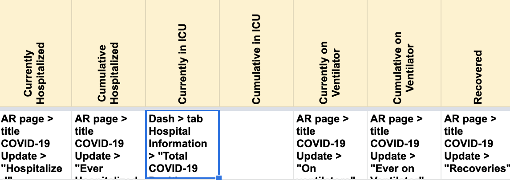 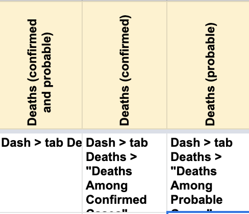